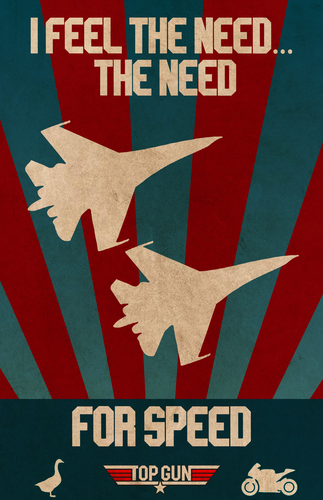
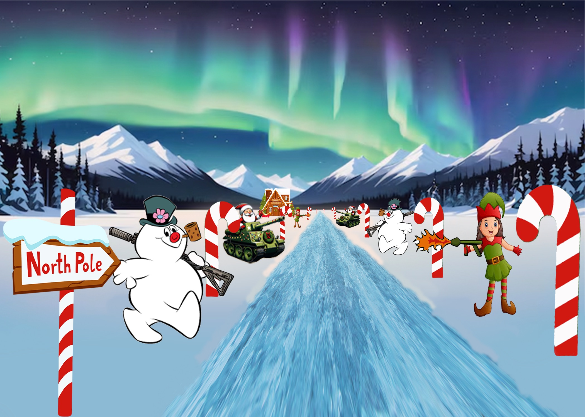
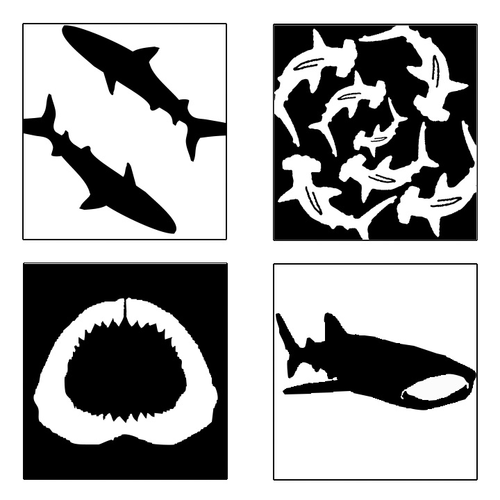
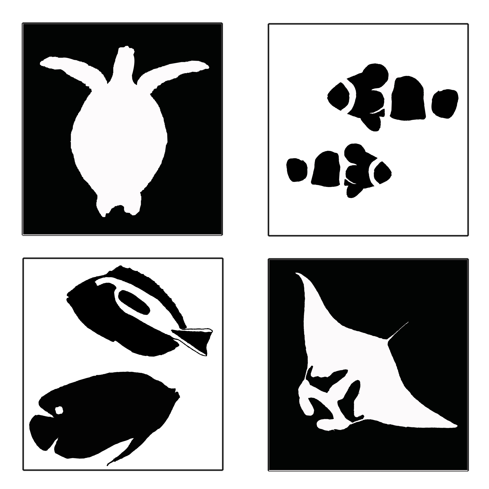
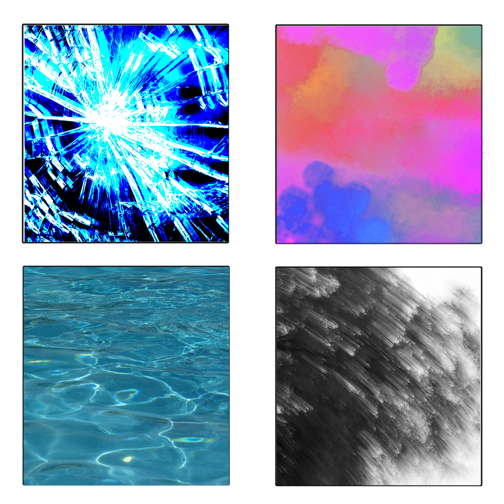
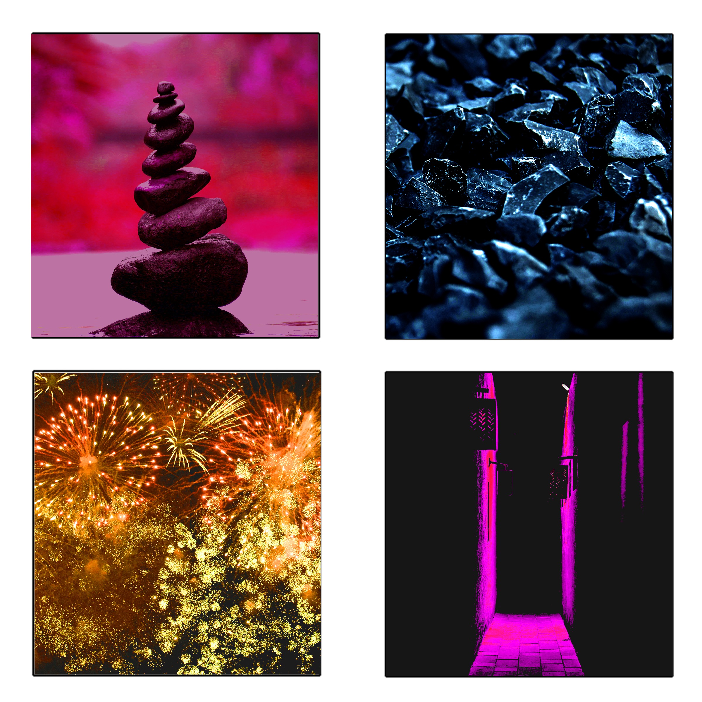
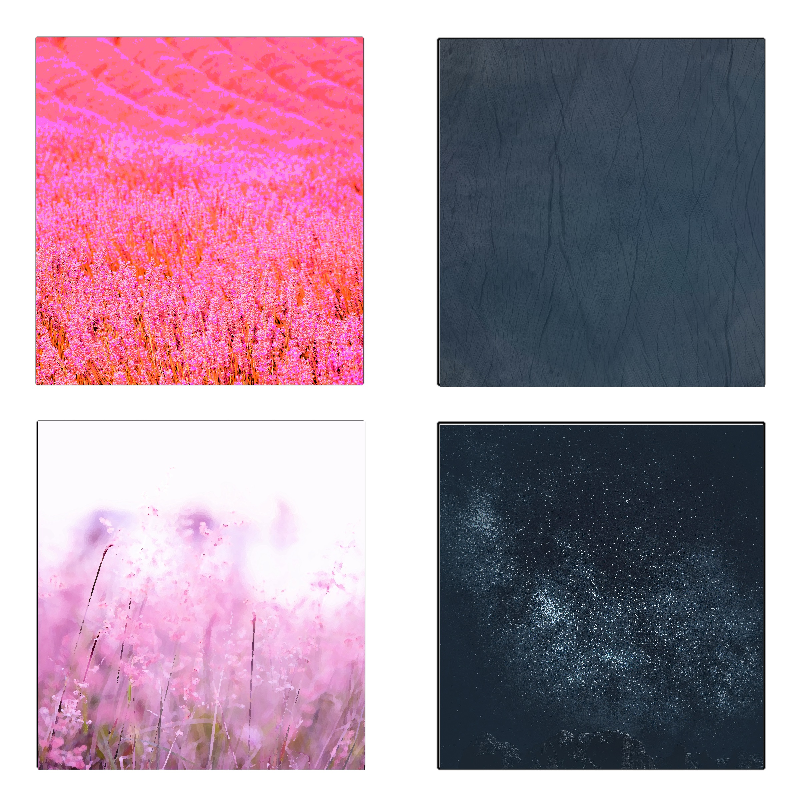
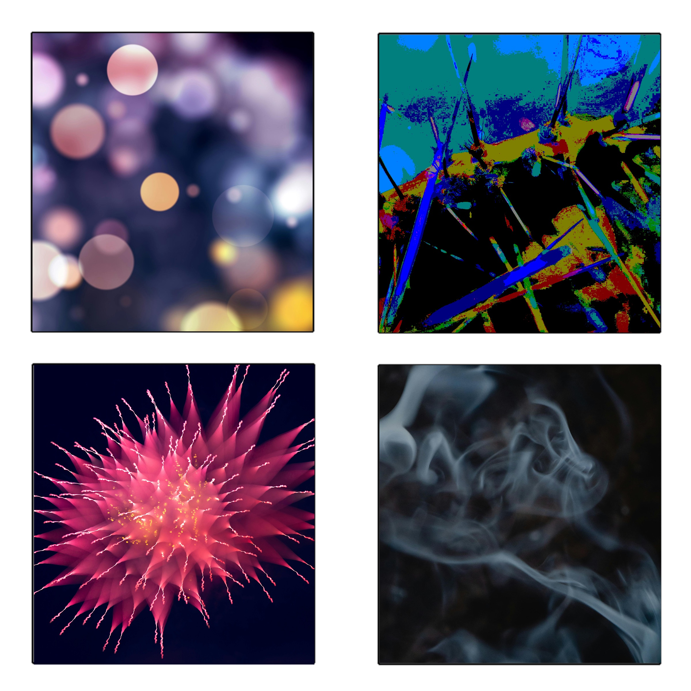

This is my collection from the Arts 102 portion of the program!!
Arts 102 is a class on the basic conepts of art design, we just made things demonstrating specific concepts

This is my absolute favorite thing I’ve ever made! As a huge fan of Top Gun, I was immediately inspired when we got the prompt to create a propaganda-style poster based on a movie or game. I knew exactly what I wanted to do. I featured the iconic quote “I feel the need... the need for speed” as the central message. Two fighter jets are positioned in a wingman formation to reflect the theme of camaraderie and precision. I added an old paper texture to give the poster a vintage, military-inspired aesthetic, and used red, white, and blue to channel a strong patriotic, all-American vibe. The motorcycle and goose silhouette represent the bond between Maverick and Goose—two central characters whose friendship defines the heart of the film. Finally, I included the Top Gun logo as a finishing touch to tie everything together.

This piece was created for a prompt where we were asked to design a tree-lined street, focusing on perspective. I decided to take a more unexpected and chaotic approach—turning a peaceful winter scene into something violent and absurd. In my version, Frosty is armed with an AK-47, the elves are equipped with flamethrowers, and Santa himself is rolling down the street in a tank. It was a fun way to combine technical skills in perspective with a darkly humorous twist, making the assignment uniquely my own.

These are my sharks! This piece was created for an assignment focused on exploring positive and negative space. I chose sharks because they’re my favorite animal, and I felt their bold shapes would lend themselves well to creating strong visual contrast—which I think I accomplished successfully. By playing with silhouette and space, I was able to highlight the form of the sharks while letting the negative space define their movement and energy. It was a fun challenge, and I’m really proud of how it turned out.

This piece was created for an assignment focused on exploring positive and negative space. I chose to feature a manta ray, a sea turtle, and a few fish because I love ocean life, and these animals have distinct shapes that work really well for creating contrast. My goal was to use the negative space to define each form clearly and make them pop off the page without relying on outlines or color. I’m really happy with how the balance of black and white turned out, and I think the use of space gives the piece a clean yet dynamic feel.

This displays art as a medium of rhythm because it is a medium of expression of elements. This demonstrates the notion of all things being put into art, similar to that of an artist offering their mental rhythm and flow into a given piece—like that of the waves of the ocean. Each stroke, shape, or pattern becomes a visual echo of the artist’s inner world. In this way, art captures not just movement, but emotion and thought in motion.

This piece represents the rhythm of art by capturing its dual nature. Art can be calming and delicate, like the gentle strum of a harp, offering peace and reflection. At the same time, it can be bold and expressive—a metaphorical roar of the soul, like the powerful beat of a drum. Through rhythm, this piece reflects how art moves between serenity and intensity, silence and sound.

This piece represents the deep depths of rhythm in a work of art, as it highlights both the joy and light infused into a piece while simultaneously encapsulating the sorrow and void within the soul. The imagery of the stars in the sky reflects the rhythms that beat through the soul from the heart, filling each work with life—those tiny rushes that bring joy to our spirit.

This piece demonstrates the rhythm of art through depictions of light and contrast. It explores the idea that rhythm can be both a display of grandeur and a means of expression—a metaphorical heartbeat or burst of energy that one feels when finally seeing the light after a long period of darkness.